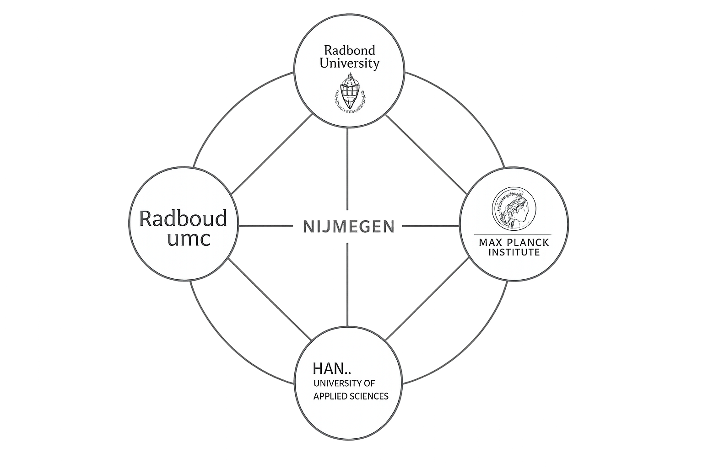
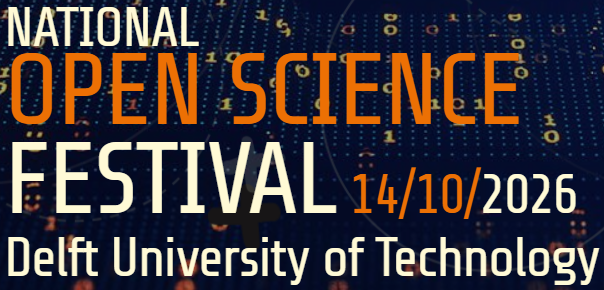

June 10, 2026
MEET-UP SIG OPEN EDUCATION: CONNECTING THE OPENS
Open Science and Open Education are both growing, but are they also growing towards one another?
Continue reading →
The Open Science Community Nijmegen (OSCN) brings together researchers, students and professionals committed to making research more transparent, reproducible and collaborative.

Open Science Community Nijmegen (OSCN) is a bottom-up network of researchers across Nijmegen who are passionate about making Open Science the norm in scholarly practice. Guided by values of openness, fairness, diversity, and inclusivity, we aim to foster a more open research culture by connecting people and sharing knowledge.
Our goals are to engage researchers with Open Science, support them in exploring and adopting open practices, and empower them to help shape research culture, infrastructure, and policy. We do this through events, workshops, and discussions that bring the community together in practice.
OSCN is part of the national Open Science Communities Netherlands (OSC-NL) and the International Network of Open Science and Scholarship Communities .
Open Science and Open Education are both growing, but are they also growing towards one another?
Continue reading →
This October, Delft will become the meeting place for the Dutch open science community...
Continue reading →
Researchers share personal turning points that led them toward open science.
Continue reading →
Radboud University

Radboud UMC
Radboud University

Radboud University

Max Planck Institute